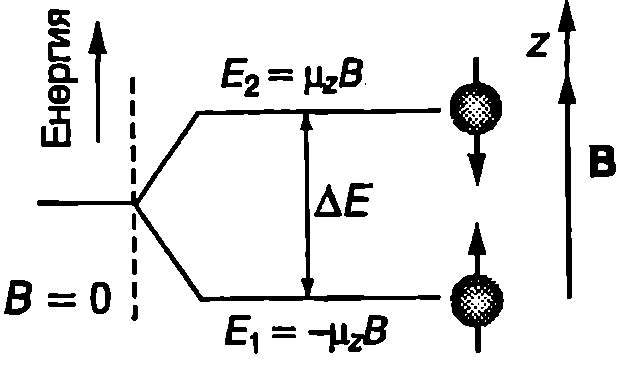
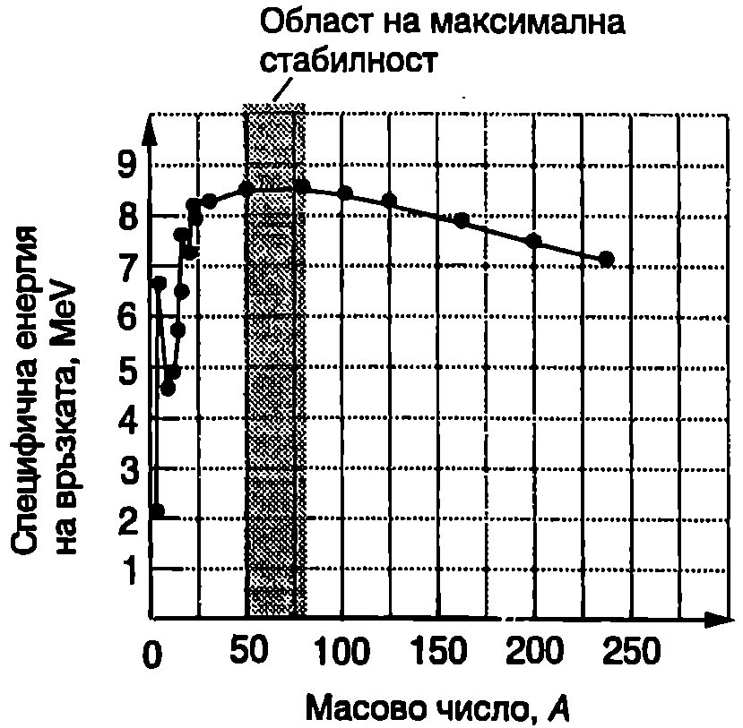

Състав на атомното ядро
Ядрата са изградени от протони и неутрони, които се наричат с общото име нуклони. Протоните са носители на елементарен положителен заряд $e = 1, 6.10^{- 19} C_1$ a неутроните са електронеутрални. Ядрата се характеризират с:
\begin{itemize} \item атомен номер $Z$, който е равен на броя на протоните в ядрото; \item брой на неутроните $N$; \item масово число $A = Z+N$. \end{itemize}
За представяне на ядрата се използва символът $^A_Z X$, където $X$ е знакът на химичния елемент, $A$ — масовото число, а $Z$ — атомният номер. Например $^{12}_6\mathrm C$ е ядро на химичния елемент въглерод (C) с масово число $A = 12$ със $Z = 6$ протона и $N = A-Z = 12 - 6 = 6$ неутрона.
Атомите на един и същ химичен елемент, които имат в ядрата си различен брой неутрони, се наричат изотопи. Всеки химичен елемент има по няколко изотопа. Например изотопите на водорода са три: водород $^1_1\mathrm H$, деутерий $^2_1\mathrm H$ и тритий $^3_1\mathrm H$.
Масата на ядрата се измерва в атомни единици за маса u. По определение една атома единица за маса (1 u) е равна на 1/12 от масата на изотопа 1C: $$1~\mathrm{u} = 1,!660\ 540.10^{-27}~\mathrm{kg}.$$ \begin{table}
\begin{tabular}{cc}
Частица (атом)& Маса, u\\
Електрон& 0,0005486 \\
Протон& 1,0072765\\
Неутрон& 1,0086652 \\
Водород ($^{1}_1$ H)& 1,0078252\\
Деутерий ($^{2}_1$ H)& 2,0141022 \\
Тритий ($^{3}_1$ H)& 3,0160497 \\
Хелий ($^{3}_2$ He)& 3,0160297 \\
Хелий ($^{4}_2$ He)& 4,0026032 \\
Въглерод ($^{12}_{6}$ C)& 12 \\
Азот ($^{14}_{7}$ N)&14,003074\\
\end{tabular}
Маси на някои частици и атоми, изразени в атомни единици за маса $u$.
\label{table:106.1}
\end{table} Експерименталните изследвания по-казват, че повечето ядра имат приблизително сферична форма. Техният радиус може да се пресметне по формулата $$r = r_0 A^\frac{1}{3}, $$ където $A$ е масовото число, а го е константа, равна на $1,!2.10^{-15}$ m.
\begin{psexample}[label=ex:106.1]{}{} Определете плътността на атомните ядра. \end{psexample}
Решение
Масата на протона е приблизително равна на масата на неутрона: $m_p = m_n = m$. Ядро с масово число $A$ има маса $Am$. Обемът на ядрото в $\displaystyle V = \frac{4}{3} \pi r^3 = \frac{4}{3} \pi r_0^3 A$, където е отчетено равенство \eqref{eq:106.1}. Плътността на ядрото е
$$\rho = \frac{mA}{V} = \frac{3m}{4\pi r_0^3} = 2,!3.10^{17}\mathrm{\frac{kg}{m^3}}$$
Следователно плътността на атомното ядро в $2,!3.10^{14}$ пъти по-голяма от плътността на водата ($1.10^3\mathrm{kg/m^3}$).
Ядрен магнитен резонанс
Както беше отбелязано в~\ref{sec:69} (на стр.110), протоните и неутроните, подобно на електроните, също имат собствени (спинови) магнитни диполни моменти. Диполният магнитен момент на атомното ядро е векторна сума от магнитните диполни моменти на съставящите го нуклони. Магнитният момент на ядрото се измерва в ядрени магнетони. Ядреният магнетон $\mu_n$ се дефинира по аналогичен начин, както магнетонът на Бор за електрона (вж. формула \eqref{eq:69.6} на стр.110): $$\mu_n = \frac{e \hbar}{2m_p} = 5 ,!05.10^{-27}~\mathrm{\frac{J}{T}}, $$ където $m_p$ е масата на протона. Ядреният магнетон $\mu_n$ е близо 2000 пъти по-малък от магнетона на Бор $\mu_B$ за електрона поради голямата разлика в масите на протона и електрона.

`Фиг. 106.1`
Да разгледаме най-простото ядро (на водорода), което е съставено само от един протон. На Фиг. \ref{fig:106.1} схематично е показан протон, който се намира в постоянно магнитно поле с индукция $\vec B$. Както при електрона, собственият магнитен момент и на протона също се квантува: неговата проекция и, може да е насочена по посока на магнитното поле ($+\mu_z$) или в противоположната посока ($-\mu_z$). Всеки магнитен дипол, който се намира във външно магнитно поле, има допълнителна магнитна енергия $-\vec\mu\cdot\vec B$. Когато проекцията на магнитния диполен момент на протона е насочена по посока на магнитното поле $\vec B$, неговата магнитната енергия е отрицателна ($-\mu_z B$), а в противоположния случай тя е положителна ($\mu_z B$). Следователно във външно магнитно поле протонът може да се намира в две енергетични състояния (Фиг. \ref{fig:106.1}), разликата в енергията на които е $\Delta E = E_2 - E_1 = 2\mu_z B$. Протонът може да преминава от състояние $E_1$ в състояние $E_2$ като поглъща фотони с енергия $h\nu_0$ равна на енергията на прехода $$h\nu_0 = \Delta E = 2\mu_z B. $$ Такова резонансно поглъщане от атомните ядра на електромагнитни кванти с определена енергия се нарича ядрен магнитен резонанс, а честотата $\nu_0$ на поглъщаното лъчение — резонансна честота. Резонансната честота, която обикновено е от радио диапазона, зависи както от индукцията В на постоянното магнитно поле, така и от диполния магнитен момент на ядрото. Като се измерят резонансните честоти, могат се определят магнитните диполни моменти и по тях да се идентифицират изследваните ядра. Например по метода на ядрения магнитен резонанс за магнитния диполен момент на свободния протон е получена стойността 2,792845$\mu_n$.
На явлението ядрен магнитен резонанс се основава една от най-съвременните техники за медицинска диагностика, наречена MRI (magnetic resonance imaging). Пациентът се поставя в голям свръхпроводящ соленоид, който създава силно постоянно магнитно поле, чиято магнитна индукция е различна в различните точки от пространството. Поради градиента на магнитното поле протоните на водородните атоми от различните части от тялото на пациента имат различни резонансни честоти на поглъщане $\nu_0$. По този начин чрез точното измерване стойността на $\nu_0$ може много прецизно да се определи местоположението на поглъщащите протони. Информацията се обработва от компютър, който пресъздава образа на изследвания орган на пациента. Освен високата разделителна способност, даваща възможност да се наблюдават малки детайли от изследваните органи, методът има и това голямо предимство, че е безвреден за пациента. Поглъщаното електромагнитно лъчение е от радиочестотния диапазон и не причинява увреждания на живите клетки.
Стабилност на атомните ядра
Стабилни са ядрата, които съществуват неограничено дълго време, ако не са подложени на външно въздействие. Нестабилните ядра спонтанно (без външно въздействие) се разпадат и изпускат частици. Това явление се нарича радиоактивност. Съществуват около 400 стабилни ядра и още стотици други ядра, които са нестабилни. Наблюдават се следните закономерности:
-
Ядрата с малък атомен номер $Z$ са най-стабилни, когато броят на неутроните в тях е равен на броя на протоните: $N = Z$.
-
Стабилните ядра с голям атомен номер имат повече неутрони, отколкото протони.
-
Всички ядра с повече от 83 протона са нестабилни.
Интересно е да се отбележи, че повечето стабилни ядра имат четна стойност на масовото число $A$. При определени стойности на $Z$ и $N$, наречени магически числа, ядрата се отличават с особено голяма стабилност. Магическите числа са $Z$ (или $N$) = 2, 8, 20, 28, 50, 82 и 126 (126 е само за неутроните).
Например хелиевите ядра $^4_2\mathrm{He}$, за които $Z = N = 2$, са изключително стабилни. Съществуването на магически числа навежда на мисълта, че ядрото, подобно на електронната обвивка на атома, има слоеста структура. Така както най-стабилни са атомите на инертните газове, чиито електронни слоеве са изцяло запълнени, по подобен начин ядрата с изцяло запълнени нуклонни слоеве също са най-стабилни. (Съществуват отделни слоеве за протоните и неутроните, които се запълват независимо.)
Ядрени сили
Стабилността на атомните ядра се обяснява с действието на ядрените сили. Експериментално са установени основните свойства на ядрените сили:
-
От съществуването на стабилни ядра следва, че ядрените сили компенсират електричното отблъскване между протоните, т.е. те са сили на привличане. Кога то броят на протоните в ядрото нараства, нараства и електричното отблъскване между тях, което се стреми да разцепи ядрото. За да се запази стабилността на ядрото, е необходим по-голям брой неутрони, тъй като на неутроните действат само ядрени сили на привличане. Това качествено обяснява защо стабилните ядра с голям атомен номер имат повече неутрони, отколкото протони. При много малки разстояния между нуклоните обаче силите на привличане се сменят с ядрени сили на отблъскване.
-
Ядрените сили не зависят от електричния заряд на нуклоните. Положително заредените протони и незаредените неутрони взаимодействат с еднакви сили.
-
Ядрените сили се насищат. Всеки нуклон взаимодейства само със своите съседи. Това показва, че ядрените сили много бързо намаляват с разстоянието между нуклоните. На малки разстояния ядрените сили са значително по-големи от електричните сили.
-
Ядрените сили зависят от взаимната ориентация на спиновете на нуклоните.
Енергия на връзката
За разделянето на частици, които взаимодействат със сили на привличане и образуват свързана система, е необходимо външни сили да извършат положителна работа, т.е. трябва да се изразходва определена енергия. Например за откъсване на електрона от водородния атом са нужни 13,6 eV енергия. Енергията, необходима за разделянето на атомното ядро на отделни неподвижни протони и неутрони, които не взаимодействат помежду си, определя т. нар. енергия на връзката $\Delta E$ на атомното ядро. Стойността й се измерва в мегаелектронволти (MeV). Тя зависи от броя на нуклоните в ядрото. Енергията на връзката за един нуклон, т.е. отношението $\Delta E/A$, се нарича специфична енергия на връзката. На Фиг. \ref{fig:106.2} графично е представена зависимостта на специфичната енергия на връзката от масовото число А за стабилните ядра. Обърнете внимание, че с изключение на най-леките ядра, средната стойност на специфичната енергия на връзката е около 8 MeV. Стойността на $\Delta E/A$ е максимална за ядрата с масово число около $A = 60$. Това означава, че тези ядра са най-стабилни техните нуклони са свързани най-здраво.
Слабата зависимост на специфичната енергия на връзката от масовото число се обяснява със свойството на ядрените сили да се насищат: даден нуклон не взаимодейства с всички останали нуклони в ядрото, а само с ограничен брой свои най-близки съседи. (Ако ядрените сили не се насищаха, специфичната енергия на връзката щеше да е правопропорционална на масовото число $A$.)

Зависимост на специфичната енергия на връзката на стабилните атомни ядра от тяхното масово число.
`Фиг. 106.2`
Масов дефект
Съгласно с теорията на относителността (вж.~\ref{sec:99}) всяко тяло с маса на покой то притежава енергия на покой $E_0 = m_0 c^2$, където $c$ е скоростта на светлината във вакуум. За да се разложи на отделни нуклони, атомното ядрото трябва да получи допълнителна енергия. Следователно свободните нуклони имат по-голяма енергия на по-кой и по-голяма маса, отколкото същите нуклони, свързани в ядро. Разликата между сумата от масите на изходните свободни протони и неутрони и масата на ядрото се нарича масов дефект и се означава с $\Delta m$. Енергията, съответстваща на масовия дефект, т.е. на намаляването на масата при свързването на нуклоните в ядро, е енергията на връзката $\Delta E$. Съгласно с формулата на Айнщайн $E_0 = m_0 c^2$ енергията на връзката и масовият дефект са свързани със съотношението $$\Delta E = \Delta m c^2. $$ Енергията на връзката е равна на произведението на масовия дефект и квадрата на скоростта на светлината във вакуум.
\begin{psexample}[label=ex:106.2]{}{} Колко мегаелектронволта е енергията на покой на частица с маса $m_0 = 1~\mathrm{u} = 1.6605.10^{-27}~\mathrm{kg}$? \end{psexample}
Решение
Най-напред от формулата на Айнщайн пресмятаме енергията на покой, изразена в джаули:
$$E_0 = m_0 c^2 = (1, 6605.10^{-27}\mathrm{kg}) (2,!9979.10^8\mathrm{m/s})^2 = 1, 4924.10^{- 10}\mathrm{J}$$
Като отчетем, че $1\mathrm{MeV} = 1.10^6~\mathrm{eV} = 1,!6022.10^{-13}~\mathrm{J}$, получаваме
$$E_0 = (1,!4924.10^{-10}\mathrm{J})\frac{1\mathrm{MeV}}{1,!6022.10^{-13}\mathrm{J}} = 931,!5\mathrm{MeV}.$$
Следователно на една атомна единица за маса съответства енергия на покой
$$(1u) c^2 = 931, 5~\mathrm{MeV}.$$
По-нататък ще използваме този резултат при решаването на задачи.
\begin{psexample}[label=ex:106.3]{}{} Колко мегаелектронволта е енергията на връзката на хелиевото ядро $^4_2\mathrm{He}$? \end{psexample}
Решение
Масата на хелиевия атом вземаме от табл. 106.1 на стр.264. Масата на хелиевото ядро $m_\text{я}$ се получава като от масата на хелиевия атом то се извади масата на двата електрона $2m_e$, които има този атом: $$m_a = m_a - 2m_b = 4,!0026032~\mathrm{u} - 2(0,!0005486~\mathrm{u}) = 4,!001506~\mathrm{u}.$$
Масовият дефект е $$\Delta m = 2m_p + 2m_n - m_\text{я} = 2(1,!0072765 u) + 2(1,!0086652 u) - 4,!001506 u = 0,!0303774 u.$$ Енергията на връзката се пресмята по формулата $$\Delta E = \Delta m c^2 = (0,!0303774~\mathrm{u}) (931,!5~\mathrm{MeV/u}) = 28,!30~\mathrm{MeV},$$ където сме отчели, че $(1~\mathrm{u}) c^2 = 931,!5~\mathrm{MeV}$ или $c^2 = 931.5~\mathrm{MeV/u}$
Задачи
-
Колко протона и колко неутрона съдържа ядрото $^{56}_{26}\mathrm{Fe}$? Колко електрона има неутралният атом на желязото? Различават ли се неутралните атоми на различните изотопи на даден химичен елемент по броя на електроните си?
-
За разделяне на ядрото $^{62}_{28}\mathrm{Ni}$ на отделни нуклони е необходима енергия 546 MeV. Колко в специфичната енергия на връзката на това ядро?
-
Енергията на връзката за ядрото $^{19}_{9}\mathrm{F}$ е 147,8 MeV. Колко е масовият дефект?
-
Пресметнете енергията на връзката за деутерия.
-
Пресметнете специфичната енергия на връзката за ядрото $^{12}_{6}\mathrm{C}$.
-
Две ядра с еднакво масово число $A$ се наричат огледални, ако броят на протоните в едното ядро е равен на броя на неутроните в другото ядро и обратно. Сравняването на енергията на връзката на две огледални ядра служи за доказателство, че ядрените сили не зависят от заряда на нуклоните. Чрез непосредствено пресмятане докажете, че разликата в енергия та на връзката на огледалните ядра $^{3}_1\mathrm{H}$ и $^{3}_2\mathrm{He}$ (вж. табл. 106.1) е равна на енергията на електростатично отблъскване на двата протона в хелиевото ядро.
Указание. При пресмятането на електростатичната потенциална енергия приемете двата протона за точкови заряди, отдалечени един от друг на разстояние $r$, равно на радиуса на атомното ядро.